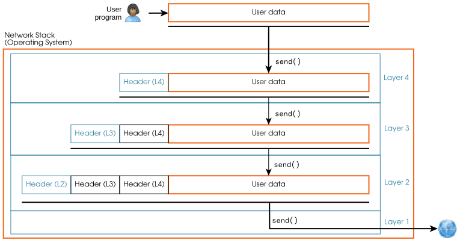
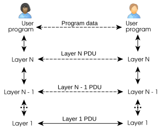

[5] Una pila de capas¶
La comunicación entre ordenadores moderna se consigue mediante una stack de capas de red. Cada pila se centra en algunos problemas y es responsable de proporcionar ciertas funcionalidades, p.ej. direccionamiento y sequencing (secuenciación) correcta (introducidos en los capítulos anteriores).
Cada layer define un par de funciones send/receive, que es responsable de algunas de estas funcionalidades. Cada capa utiliza el send y el receive de la capa inferior, es decir, las funcionalidades de una capa se apoyan en las funcionalidades de todas las capas que tiene por debajo.
Para coordinar las capas y hacer posible la comunicación virtual entre ellas, cada capa define un packet format (formato de paquete) distinto, que encapsula un paquete de la capa que tiene por encima.
[5.1] Envío de datos¶
Para implementar estas capacidades, cada capa transmite no solo los data proporcionados por la capa superior, sino también una cabecera con toda la metainformación necesaria para esa capacidad. Así, cada capa necesita definir el packet format, añadiendo cierto overhead (sobrecarga) (típicamente una cabecera) al payload (carga útil), p.ej.:

Cuando un programa de usuario quiere enviar algunos datos, utiliza el método send de la capa superior de la pila, lo que acaba provocando que la capa física transmita ciertos datos, p.ej. a través de un cable o una antena. La siguiente figura representa la estructura de una stack de 4 capas:

Los paquetes producidos por cada capa se denominan genéricamente PDUs (Protocol Data Unit). Las PDU de cada capa tienen nombres específicos como frame (trama), datagrama o segmento. Estos nombres deben usarse con precisión en contextos técnicos.
Cada capa incluye la PDU de la capa superior dentro de la definición del packet format de su propia PDU. Este proceso se denomina encapsulación.
Ejercicio 5.1
El programa de usuario quiere enviar \(420\) bytes de datos utilizando la stack de la figura anterior. Supón un tamaño de cabecera para las capas 2, 3 y 4 de \(14\) bytes, \(20\) bytes y \(20\) bytes, respectivamente.
-
¿Cuál es el tamaño del payload y el tamaño del overhead de la PDU de cada capa?
-
¿Cuál es el tamaño del payload y el tamaño del overhead de toda la stack?
[5.2] Recepción de datos¶
Cuando un paquete llega a la stack de red del destinatario, se procesa en orden inverso, es decir, las capas se recorren de abajo arriba. Cada capa inspecciona solo la cabecera correspondiente a esa capa. Si todo es correcto, la capa elimina la cabecera y pasa el resto del paquete a la capa superior. A su vez, la capa de arriba pasa los datos restantes (el payload) al destinatario. Continuando con el ejemplo de la pila de 4 capas:

En una pila de red, solo la capa inferior interactúa directamente con el exterior, p.ej. solo la tarjeta de red física de un ordenador está conectada a un cable que lleva datos a otros ordenadores. Al mismo tiempo, los datos enviados por la capa inferior incluyen las PDU de todas las capas mediante la encapsulation. Gracias a esto, existe una comunicación virtual entre cada capa de un extremo y su homóloga en el otro extremo de la comunicación. La siguiente figura representa la comunicación real (línea continua) y la virtual (línea discontinua) en nuestro ejemplo:

Ejercicio 5.2
Otro ejemplo de stack de red tiene 3 capas: L1, L2 y L3 de abajo arriba.
La PDU de la capa L2 es la siguiente:

La PDU de la capa L3 es la siguiente:

La capa L1 recibe un paquete de datos y su función receive devuelve los siguientes datos (supón enteros unsigned (sin signo) y orden big endian cuando sea necesario:
01 23 00 0a 01 00 00 06 00 aa 00 bb 43 20
-
¿Qué payload de datos se envió al programa destinatario en este paquete?
-
Si este es el último paquete de la comunicación, ¿cuántos datos (de payload) se enviaron al programa de usuario destinatario?
-
Como máximo, ¿cuántos ordenadores distintos pueden conectarse usando esta stack?
-
Enviamos un fichero como payload de esta pila. ¿Cuál es su tamaño máximo posible?
snippets/encapsulation.py
import typing
import struct
def layer2_encapsulate(address: int, data: bytes) -> bytes:
"""Encapsulate a PDU of layer 3 into a PDU of layer 2."""
assert 0x0000 <= address <= 0xffff, "Invalid layer 2 address"
assert len(data) <= 0xffff, "Too much data for a layer 2 PDU"
return bytes(struct.pack(">H", address)
+ struct.pack(">H", len(data))
+ data)
def layer3_encapsulate(offset: int, data: bytes) -> bytes:
"""Encapsulate a chunk of user data into a PDU of layer 3."""
assert 0x0000 <= offset <= 0xffff, "Invalid layer 3 offset"
assert len(data) <= 0xffff, "Too much data for a layer 3 PDU"
return bytes(struct.pack(">H", offset)
+ struct.pack(">H", len(data))
+ data)
def stack_send(data: bytes, output_file: typing.BinaryIO):
layer3_pdu = layer3_encapsulate(offset=0, data=data)
layer2_pdu = layer2_encapsulate(address=0xabcd, data=layer3_pdu)
output_file.write(layer2_pdu)
if __name__ == '__main__':
with (open(__file__, "rb") as input_file,
open("/dev/stdout", "wb") as output_file):
payload = input_file.read()
stack_send(data=payload, output_file=output_file)
��\x04�\x00\x00\x04�import typing
import struct
def layer2_encapsulate(address: int, data: bytes) -> bytes:
"""Encapsulate a PDU of layer 3 into a PDU of layer 2."""
assert 0x0000 <= address <= 0xffff, "Invalid layer 2 address"
assert len(data) <= 0xffff, "Too much data for a layer 2 PDU"
return bytes(struct.pack(">H", address)
+ struct.pack(">H", len(data))
+ data)
def layer3_encapsulate(offset: int, data: bytes) -> bytes:
"""Encapsulate a chunk of user data into a PDU of layer 3."""
assert 0x0000 <= offset <= 0xffff, "Invalid layer 3 offset"
assert len(data) <= 0xffff, "Too much data for a layer 3 PDU"
return bytes(struct.pack(">H", offset)
+ struct.pack(">H", len(data))
+ data)
def stack_send(data: bytes, output_file: typing.BinaryIO):
layer3_pdu = layer3_encapsulate(offset=0, data=data)
layer2_pdu = layer2_encapsulate(address=0xabcd, data=layer3_pdu)
output_file.write(layer2_pdu)
if __name__ == '__main__':
with (open(__file__, "rb") as input_file,
open("/dev/stdout", "wb") as output_file):
payload = input_file.read()
stack_send(data=payload, output_file=output_file)
Ejercicio 5.3
El código anterior toma unos datos y escribe los bytes que se enviarían a la capa 1 (la capa física) de la pila de red del ejercicio 5.2. Implementa el extremo receptor de la pila de la siguiente manera:
-
Implementa una función
layer2_decapsulate(data: bytes) -> (int, bytes)que tome una PDU de la capa 2 y devuelva la tupla(address, payload), dondeaddresses la dirección de destino ypayloades la PDU de la capa 3 encapsulada. -
Implementa una función
layer3_decapsulate(data: bytes) -> (int, bytes)que tome una PDU de la capa 3 y devuelva la tupla(offset, payload), dondeoffsetes el offset (desplazamiento) de la carga útil, ypayloades el fragmento de datos enviado por el otro extremo de la comunicación. -
Implementa una función
stack_receive(data: bytes)que decodifique una PDU de la capa 1 (usando las dos funciones anteriores) y muestre una línea de mensaje similar a"Received a chunk of data. Length: 12 bytes, Address: 0xabcd, Offset: 0." -
Completa la función
stack_sendde forma que los datos de entrada se dividan en fragmentos de como mucho 100 bytes, se produzca una PDU de la capa 1 válida para cada uno de esos fragmentos, y esas PDU de la capa 1 se pasen astack_receive. -
¿Funcionaría tu implementación si las PDU de la capa 1 se ordenaran aleatoriamente antes de pasarlas a la pila receptora?
Nota
La biblioteca struct de Python es útil, aunque no obligatoria, para dar formato a los bytes de un paquete.